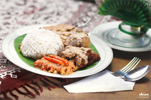

Ayam Goreng Crispy
Ayam goreng crispy disajikan dengan nasi putih hangat dan sambal yang nikmat
Nasi Goreng Special
Nasi goreng khas gudeg bu tjitro disajikan dengan telor mata sapi beserta lalapan

Nasi Gudeg Bu Tjitro
Nasi gudeg areh yang disajikan beserta krecek dan telor bebek
Buntil
Parutan kelapa muda yang dicampur dengan teri lalu dibungkus dengan daun pepaya
Tahu Tempe Bacem
Potongan tahu dan tempe yang dibumbui dengan bumbu bacem cocok untuk melengkapi hidangan anda
Gudeg Kendil
Gudeg yang ditaruh didalam kendil sehingga dapat tahan selama 2 hari untuk dinikmati bersama keluarga ataupun kerabat
Nasi Goreng Ayam Special
Nasi goreng yang disajikan dengan ayam telor mata sapi kerupuk dan lalapan
Soto Ayam
Soto ayam yang dilengkapi dengan bihun dan potongan kripik kentang
Teh Poci
Teh yang disajikan dengan poci menggunakan gula batu
Kelapa Muda
Kelapa segar yang disajikan langsung dari kelapa